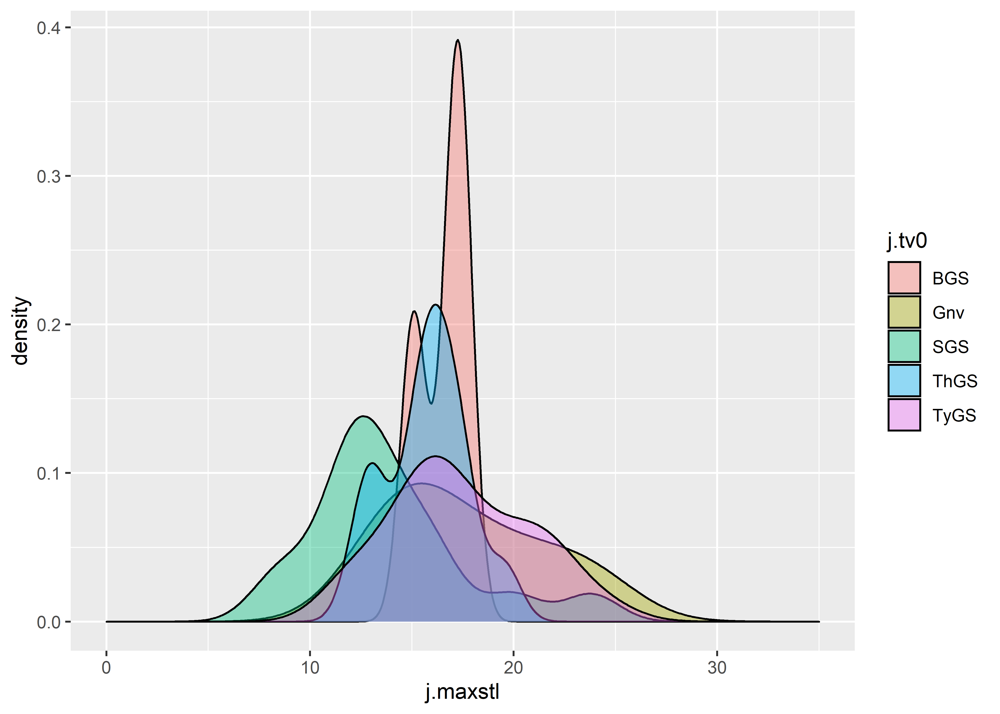
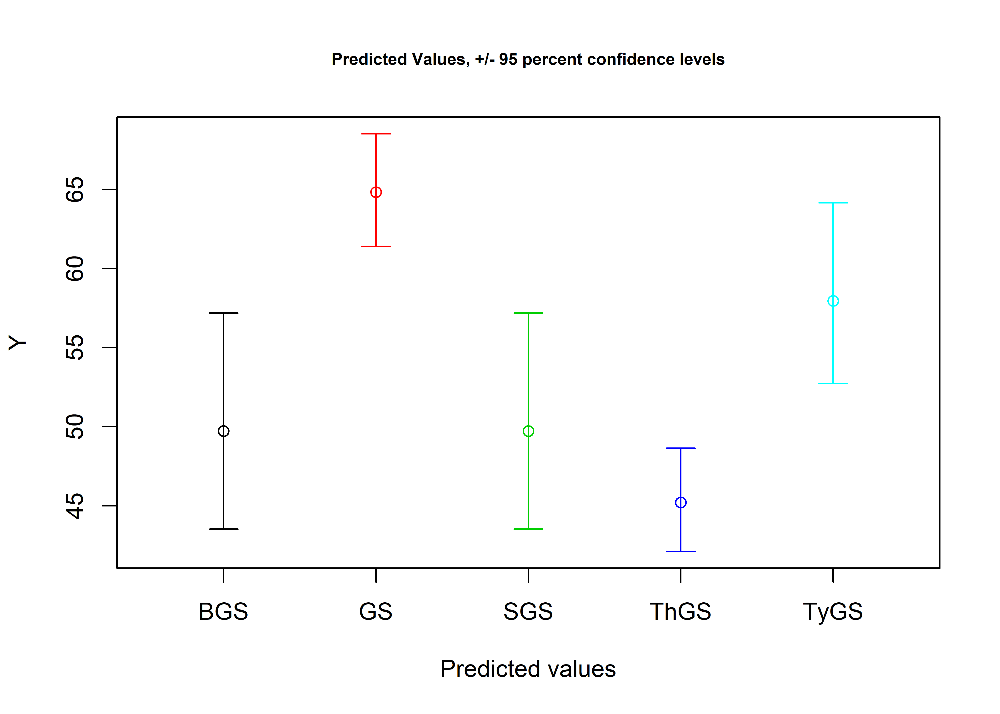

Chapter 4 Jaketown type-varieties
4.1 Reconstructing Gary type-varieties
Reconstructing and expanding the type-varieties of Gary dart points proposed at Poverty Point, Cooper, and Means was necessary, as the type-variety assignments for each specimen were not reported or preserved on the associated paperwork when the collections were curated. Additionally, the collection of Gary dart points at Poverty Point has continued to grow, and this method provides a replicable means of assigning each new specimen to the previously-established type-varieties.
# install required analysis packages
#devtools::install_github("tidyverse/tidyverse")
#devtools::install_github("rich-iannone/DiagrammeR")
#devtools::install_github("vqv/ggbiplot")
#devtools::install_github("mlcollyer/RRPP")
#devtools::install_github("kassambara/ggpubr")
#devtools::install_github('sinhrks/ggfortify')
# load libraries
library(tidyverse)
library(DiagrammeR)
library(ggbiplot)
library(RRPP)
library(ggpubr)
library(ggfortify)
library(cluster)4.1.1 Set wd, and load data
4.2 Gary varieties proposed by Ford, Phillips, and Haag (1955)
The tv0 argument used within this and the subsequent section articulates with three variants of the Gary type–including Gary Stemmed, Typical Gary Stemmed, Broad Gary Stemmed, Thin Gary Stemmed, and Small Gary Stemmed, which were assigned using those morphological criteria advanced by Ford, Phillips, and Haag (1955) at the Jaketown site in west central Mississippi. The Long Gary Stemmed type was omitted from consideration due to the absence of reported metrics.
# Ford, Phillips, and Haag (1955)
fphl<-data.frame(Name=c('var.GaryStemmed','var.TypicalGaryStemmed','var.BroadGaryStemmed','var.ThinGaryStemmed','var.SmallGaryStemmed'),
Length=c(45,45,45,55,35), # in mm
end=c(70,79,70,75,50) # in mm
)
fphlength<-ggplot(fphl,aes(x=Length,xend=end,y=Name,yend=Name,color=Name)) +
geom_segment(size=2) +
scale_color_brewer(palette = "Set1") +
theme(legend.position = "none")
fphw<-data.frame(Name=c('var.GaryStemmed','var.TypicalGaryStemmed','var.BroadGaryStemmed','var.ThinGaryStemmed','var.SmallGaryStemmed'),
Width=c(22,22,32,30,20), # in mm
end=c(31,31,48,36,30) # in mm
)
fphwidth<-ggplot(fphw,aes(x=Width,xend=end,y=Name,yend=Name,color=Name)) +
geom_segment(size=2) +
scale_color_brewer(palette = "Set1") +
theme(legend.position = "none")
# render figure
fphfig<-ggarrange(fphlength,fphwidth,
labels = c("a","b"),
ncol = 1, nrow = 2)
fphfig
Figure 4.1: Gantt charts illustrating the range of linear measurements for each type-variety reported by Ford, Phillips, and Haag (1955).
4.3 Assign Gary type-varieties proposed by Ford, Phillips, and Haag (1955)
Ford, Phillips, and Haag (1955) used a series of metrics to assign Gary varieties at the Jaketown site. The approach empoyed here enlists the full range of reported metrics, and applies those to each of the points. Any points that do not articulate with one of the three criteria were assigned as Gary no variety (Gnv), and, for the purpose of this undertaking, are considered to be Gary dart points with no type-variety assignment. Due to the degree of overlap in the ranges associated with the Gary type-varieties advanced by Ford, Phillips, and Haag (1956), it is expected that Gary Stemmed will fall out due to overlap in length with Broad Gary Stemmed, and overlap in width with Typical Gary Stemmed.
Data for Gary dart points from the Jaketown site have not yet been collected, and are substituted with those data from the Poverty Point site.
# subset poverty point data
jmx<-subset(data,Site=="Pov Pt",select=maxl:maxstw)
# assign varieties based upon reported metrics in Ford, Phillips, and Haag [1954]
fphlcheck1 <- jmx$maxl >= 45 & jmx$maxl <= 70
fphlcheck2 <- jmx$maxl >= 45 & jmx$maxl <= 79
fphlcheck3 <- jmx$maxl >= 45 & jmx$maxl <= 70
fphlcheck4 <- jmx$maxl >= 55 & jmx$maxl <= 75
fphlcheck5 <- jmx$maxl >= 35 & jmx$maxl <= 50
fphwcheck1 <- jmx$maxw >= 22 & jmx$maxw <= 31
fphwcheck2 <- jmx$maxw >= 22 & jmx$maxw <= 31
fphwcheck3 <- jmx$maxw >= 32 & jmx$maxw <= 48
fphwcheck4 <- jmx$maxw >= 30 & jmx$maxw <= 36
fphwcheck5 <- jmx$maxw >= 20 & jmx$maxw <= 30
jmx$tv0 <- "Gnv" # = Gary points (no variety)
jmx$tv0 <- ifelse(fphlcheck1 & fphwcheck1, "GS", jmx$tv0)
jmx$tv0 <- ifelse(fphlcheck2 & fphwcheck2, "TyGS", jmx$tv0)
jmx$tv0 <- ifelse(fphlcheck3 & fphwcheck3, "BGS", jmx$tv0)
jmx$tv0 <- ifelse(fphlcheck4 & fphwcheck4, "ThGS", jmx$tv0)
jmx$tv0 <- ifelse(fphlcheck5 & fphwcheck5, "SGS", jmx$tv0)
tv0<-jmx$tv0
tv0## [1] "Gnv" "TyGS" "ThGS" "ThGS" "TyGS" "Gnv" "TyGS" "ThGS" "TyGS"
## [10] "ThGS" "ThGS" "ThGS" "ThGS" "ThGS" "ThGS" "TyGS" "TyGS" "TyGS"
## [19] "ThGS" "TyGS" "TyGS" "TyGS" "TyGS" "ThGS" "TyGS" "TyGS" "ThGS"
## [28] "TyGS" "TyGS" "TyGS" "ThGS" "TyGS" "TyGS" "TyGS" "BGS" "TyGS"
## [37] "TyGS" "TyGS" "TyGS" "TyGS" "TyGS" "TyGS" "TyGS" "SGS" "SGS"
## [46] "SGS" "BGS" "SGS" "Gnv" "SGS" "SGS" "SGS" "BGS" "SGS"
## [55] "Gnv" "SGS" "SGS" "SGS" "Gnv" "SGS" "SGS" "SGS" "SGS"
## [64] "SGS"4.4 Boxplots for site by Ford, Phillips, and Haag’s (1955) Gary type-varieties
# boxplot of maximum length
jmaxl<-ggplot(jmx,aes(x=tv0,y=maxl,color=tv0)) +
geom_boxplot() +
geom_dotplot(binaxis = 'y',stackdir = 'center',dotsize = 0.3) +
scale_color_brewer(palette = "Set1") +
theme(legend.position = "none")
# boxplot of maximum width
jmaxw<-ggplot(jmx,aes(x=tv0,y=maxw,color=tv0)) +
geom_boxplot() +
geom_dotplot(binaxis = 'y',stackdir = 'center',dotsize = 0.3)+
scale_color_brewer(palette = "Set1") +
theme(legend.position = "none")
# boxplot of maximum thickness
jmaxth<-ggplot(jmx,aes(x=tv0,y=maxth,color=tv0)) +
geom_boxplot() +
geom_dotplot(binaxis = 'y',stackdir = 'center',dotsize = 0.3)+
scale_color_brewer(palette = "Set1") +
theme(legend.position = "none")
# boxplot of maximum stem length
jmaxstl<-ggplot(jmx,aes(x=tv0,y=maxstl,color=tv0)) +
geom_boxplot() +
geom_dotplot(binaxis = 'y',stackdir = 'center',dotsize = 0.3)+
scale_color_brewer(palette = "Set1") +
theme(legend.position = "none")
# boxplot of maximum thickness
jmaxstw<-ggplot(jmx,aes(x=tv0,y=maxstw,color=tv0)) +
geom_boxplot() +
geom_dotplot(binaxis = 'y',stackdir = 'center',dotsize = 0.3)+
scale_color_brewer(palette = "Set1") +
theme(legend.position = "none")
# render figure
jfigure<-ggarrange(jmaxl,jmaxw,jmaxth,jmaxstl,jmaxstw,
labels = c("a","b","c","d","e"),
ncol = 3, nrow = 2)## `stat_bindot()` using `bins = 30`. Pick better value with `binwidth`.
## `stat_bindot()` using `bins = 30`. Pick better value with `binwidth`.
## `stat_bindot()` using `bins = 30`. Pick better value with `binwidth`.
## `stat_bindot()` using `bins = 30`. Pick better value with `binwidth`.
## `stat_bindot()` using `bins = 30`. Pick better value with `binwidth`.Figure 4.2: Boxplots for maximum a, length; b, width; c, thickness; d, stem length; and e, stem width for Gary dart points assigned to the Ford, Phillips, and Haag type-varieties.
4.5 Density plots for variables by type-varieties
4.5.1 Density plot for maximum length by tv0
# define variables in jaketown subset
j.maxl<-jmx$maxl
j.maxw<-jmx$maxw
j.maxth<-jmx$maxth
j.maxstl<-jmx$maxstl
j.maxstw<-jmx$maxstw
j.tv0<-jmx$tv0
# density plot of maxl by tv0
ggplot(jmx, aes(x=j.maxl, fill = j.tv0)) +
geom_density(alpha = .4) +
scale_color_brewer(palette = "Set1") +
xlim(0,140) #full range of variation included in the linear measurements associated with type-varieties
4.5.2 Density plot for maximum width by tv0
4.5.3 Density plot for maximum thickness by tv0
4.5.4 Density plot for maximum stem length by tv0
# density plot of maxstl by tv0
ggplot(jmx, aes(x=j.maxstl, fill = j.tv0)) +
geom_density(alpha = .4) +
scale_color_brewer(palette = "Set1") +
xlim(0,35)
4.5.5 Density plot for maximum stem width by tv0
# density plot of maxstw by tv0
ggplot(jmx, aes(x=j.maxstw, fill = j.tv0)) +
geom_density(alpha = .4) +
scale_color_brewer(palette = "Set1") +
xlim(0,45)
4.6 Principal Components Analysis for Ford, Phillips, and Haag’s (1955) type-varieties at all sites
#pca
df<-jmx[c(1:5)]
tv0pca<-autoplot(prcomp(df),data = jmx, colour = 'tv0',
loadings = TRUE, loadings.colour = 'blue',
loadings.label = TRUE,loadings.label.size = 3,
frame = TRUE)
#render figure
tv0pcaFigure 4.3: PCA by Gary type-varieties reported by Ford, Phillips, and Haag (1955).
4.7 Analyses of Variance (ANOVA) for linear variables ~ type-varieties
4.7.1 Maximum length ~ type-variety at Jaketown
# anova = maximum length ~ tv1
t0ml<-lm.rrpp(j.maxl ~ j.tv0, SS.type = "I",data = jmx,iter = 9999,print.progress = FALSE)
anova(t0ml)##
## Analysis of Variance, using Residual Randomization
## Permutation procedure: Randomization of null model residuals
## Number of permutations: 10000
## Estimation method: Ordinary Least Squares
## Sums of Squares and Cross-products: Type I
## Effect sizes (Z) based on F distributions
##
## Df SS MS Rsq F Z Pr(>F)
## j.tv0 4 3256.9 814.21 0.54881 17.942 3.9043 1e-04 ***
## Residuals 59 2677.5 45.38 0.45119
## Total 63 5934.4
## ---
## Signif. codes: 0 '***' 0.001 '**' 0.01 '*' 0.05 '.' 0.1 ' ' 1
##
## Call: lm.rrpp(f1 = j.maxl ~ j.tv0, iter = 9999, SS.type = "I", data = jmx,
## print.progress = FALSE)# visualise model predictions for maximum length ~ type-variety at poverty point
j.tvDF<-data.frame(j.tv0 = c("GS","TyGS","BGS","ThGS","SGS"))
rownames(j.tvDF)<-c("GS","TyGS","BGS","ThGS","SGS")
jPreds<-predict(t0ml,j.tvDF)
jPreds##
## Linear Model fit with lm.rrpp
##
## Number of predictions: 5
## Confidence level: 95 %
## Number of bootstrap permutations: 10000
##
## Predicted values:
##
## [,1]
## GS 49.71877
## TyGS 64.83232
## BGS 49.71877
## ThGS 45.20059
## SGS 57.95582
##
##
## 95 % Lower confidence limits:
##
## [,1]
## GS 43.52476
## TyGS 61.39407
## BGS 43.52476
## ThGS 42.09993
## SGS 52.72822
##
##
## 95 % Upper confidence limits:
##
## [,1]
## GS 57.18866
## TyGS 68.52566
## BGS 57.18866
## ThGS 48.63331
## SGS 64.15411
# pairwise comparison of LS means = which sites differ?
j.ml<-pairwise(t0ml, groups = jmx$tv0)
summary(j.ml, confidence = 0.95, test.type = "dist")##
## Pairwise comparisons
##
## Groups: BGS Gnv SGS ThGS TyGS
##
## RRPP: 10000 permutations
##
## LS means:
## Vectors hidden (use show.vectors = TRUE to view)
##
## Pairwise distances between means, plus statistics
## d UCL (95%) Z Pr > d
## BGS:Gnv 8.202000 13.835433 0.5788008 0.2587
## BGS:SGS 4.573750 11.707552 -0.1022504 0.4702
## BGS:ThGS 15.042308 12.061641 2.7000891 0.0120
## BGS:TyGS 9.255926 11.288278 1.2857534 0.1202
## Gnv:SGS 12.775750 9.809825 2.9163694 0.0095
## Gnv:ThGS 6.840308 10.014023 0.8753376 0.1874
## Gnv:TyGS 1.053926 9.128011 -0.9891383 0.8316
## SGS:ThGS 19.616058 6.970952 7.8126181 0.0001
## SGS:TyGS 13.829676 5.946205 6.2588412 0.0001
## ThGS:TyGS 5.786382 6.420657 1.6093651 0.0774# correlation between mean vectors (angles in degrees)
summary(j.ml, confidence = 0.95, test.type = "VC", angle.type = "deg")##
## Pairwise comparisons
##
## Groups: BGS Gnv SGS ThGS TyGS
##
## RRPP: 10000 permutations
##
## LS means:
## Vectors hidden (use show.vectors = TRUE to view)
##
## Pairwise statistics based on mean vector correlations
## r angle UCL (95%) Z Pr > angle
## BGS:Gnv 1 8.537736e-07 8.537736e-07 1.2222743 0.20100
## BGS:SGS 1 0.000000e+00 8.537736e-07 -0.7539312 0.68400
## BGS:ThGS 1 0.000000e+00 8.537736e-07 -0.7444567 0.68110
## BGS:TyGS 1 0.000000e+00 8.537736e-07 -0.7334114 0.67770
## Gnv:SGS 1 8.537736e-07 8.537736e-07 1.1610444 0.21350
## Gnv:ThGS 1 8.537736e-07 8.537736e-07 1.1738057 0.21080
## Gnv:TyGS 1 8.537736e-07 8.537736e-07 1.1891737 0.20765
## SGS:ThGS 1 0.000000e+00 8.537736e-07 -0.7747801 0.69070
## SGS:TyGS 1 0.000000e+00 8.537736e-07 -0.7637240 0.68735
## ThGS:TyGS 1 0.000000e+00 8.537736e-07 -0.7563550 0.68505# pairwise distances between variances = standardization?
summary(j.ml, confidence = 0.95, test.type = "var")##
## Pairwise comparisons
##
## Groups: BGS Gnv SGS ThGS TyGS
##
## RRPP: 10000 permutations
##
##
## Observed variances by group
##
## BGS Gnv SGS ThGS TyGS
## 10.95407 231.98634 10.77216 21.79628 38.11191
##
## Pairwise distances between variances, plus statistics
## d UCL (95%) Z Pr > d
## BGS:Gnv 221.0322693 137.39099 4.2931918 0.0031
## BGS:SGS 0.1819057 109.58685 -0.9993246 0.9968
## BGS:ThGS 10.8422126 111.33476 -0.7057040 0.7970
## BGS:TyGS 27.1578390 108.26801 -0.2195305 0.5106
## Gnv:SGS 221.2141751 89.64848 6.9274689 0.0001
## Gnv:ThGS 210.1900567 90.29874 6.3047705 0.0001
## Gnv:TyGS 193.8744304 87.76304 6.2407980 0.0003
## SGS:ThGS 11.0241184 57.66377 -0.7530169 0.7207
## SGS:TyGS 27.3397447 47.35996 0.4626217 0.2943
## ThGS:TyGS 16.3156263 51.91995 -0.3638797 0.5677# anova = maximum length ~ tv0
t0ml<-lm.rrpp(maxl ~ tv0, SS.type = "I",data = jmx,iter = 9999,print.progress = FALSE)
anova(t0ml)##
## Analysis of Variance, using Residual Randomization
## Permutation procedure: Randomization of null model residuals
## Number of permutations: 10000
## Estimation method: Ordinary Least Squares
## Sums of Squares and Cross-products: Type I
## Effect sizes (Z) based on F distributions
##
## Df SS MS Rsq F Z Pr(>F)
## tv0 4 3256.9 814.21 0.54881 17.942 3.9043 1e-04 ***
## Residuals 59 2677.5 45.38 0.45119
## Total 63 5934.4
## ---
## Signif. codes: 0 '***' 0.001 '**' 0.01 '*' 0.05 '.' 0.1 ' ' 1
##
## Call: lm.rrpp(f1 = maxl ~ tv0, iter = 9999, SS.type = "I", data = jmx,
## print.progress = FALSE)# anova = maximum width ~ tv0
t0mw<-lm.rrpp(maxw ~ tv0, SS.type = "I",data = jmx,iter = 9999,print.progress = FALSE)
anova(t0mw)##
## Analysis of Variance, using Residual Randomization
## Permutation procedure: Randomization of null model residuals
## Number of permutations: 10000
## Estimation method: Ordinary Least Squares
## Sums of Squares and Cross-products: Type I
## Effect sizes (Z) based on F distributions
##
## Df SS MS Rsq F Z Pr(>F)
## tv0 4 570.85 142.712 0.48489 13.885 3.4853 1e-04 ***
## Residuals 59 606.41 10.278 0.51511
## Total 63 1177.26
## ---
## Signif. codes: 0 '***' 0.001 '**' 0.01 '*' 0.05 '.' 0.1 ' ' 1
##
## Call: lm.rrpp(f1 = maxw ~ tv0, iter = 9999, SS.type = "I", data = jmx,
## print.progress = FALSE)# anova = maximum thickness ~ tv0
t0mth<-lm.rrpp(maxth ~ tv0, SS.type = "I",data = jmx,iter = 9999,print.progress = FALSE)
anova(t0mth)##
## Analysis of Variance, using Residual Randomization
## Permutation procedure: Randomization of null model residuals
## Number of permutations: 10000
## Estimation method: Ordinary Least Squares
## Sums of Squares and Cross-products: Type I
## Effect sizes (Z) based on F distributions
##
## Df SS MS Rsq F Z Pr(>F)
## tv0 4 34.118 8.5295 0.12858 2.1765 1.2448 0.0835 .
## Residuals 59 231.217 3.9189 0.87142
## Total 63 265.335
## ---
## Signif. codes: 0 '***' 0.001 '**' 0.01 '*' 0.05 '.' 0.1 ' ' 1
##
## Call: lm.rrpp(f1 = maxth ~ tv0, iter = 9999, SS.type = "I", data = jmx,
## print.progress = FALSE)# anova = maximum stem length ~ tv0
t0mstl<-lm.rrpp(maxstl ~ tv0, SS.type = "I",data = jmx,iter = 9999,print.progress = FALSE)
anova(t0mstl)##
## Analysis of Variance, using Residual Randomization
## Permutation procedure: Randomization of null model residuals
## Number of permutations: 10000
## Estimation method: Ordinary Least Squares
## Sums of Squares and Cross-products: Type I
## Effect sizes (Z) based on F distributions
##
## Df SS MS Rsq F Z Pr(>F)
## tv0 4 143.33 35.832 0.1819 3.2796 1.7418 0.0197 *
## Residuals 59 644.61 10.926 0.8181
## Total 63 787.94
## ---
## Signif. codes: 0 '***' 0.001 '**' 0.01 '*' 0.05 '.' 0.1 ' ' 1
##
## Call: lm.rrpp(f1 = maxstl ~ tv0, iter = 9999, SS.type = "I", data = jmx,
## print.progress = FALSE)# anova = maximum stem width ~ tv0
t0mstw<-lm.rrpp(maxstw ~ tv0, SS.type = "I",data = jmx,iter = 9999,print.progress = FALSE)
anova(t0mstw)##
## Analysis of Variance, using Residual Randomization
## Permutation procedure: Randomization of null model residuals
## Number of permutations: 10000
## Estimation method: Ordinary Least Squares
## Sums of Squares and Cross-products: Type I
## Effect sizes (Z) based on F distributions
##
## Df SS MS Rsq F Z Pr(>F)
## tv0 4 110.27 27.568 0.14201 2.4414 1.3848 0.057 .
## Residuals 59 666.22 11.292 0.85799
## Total 63 776.50
## ---
## Signif. codes: 0 '***' 0.001 '**' 0.01 '*' 0.05 '.' 0.1 ' ' 1
##
## Call: lm.rrpp(f1 = maxstw ~ tv0, iter = 9999, SS.type = "I", data = jmx,
## print.progress = FALSE)References
Ford, James A., Philip Phillips, and William G. Haag. 1955. The Jaketown Site in West-Central Mississippi. Vol. 45: Part 1. Anthropological Papers of the American Museum of Natural History. New York: American Museum of Natural History. http://digitallibrary.amnh.org/handle/2246/90.
Ford, James A., and Clarence H. Webb. 1956. Poverty Point, a Late Archaic Site in Louisiana. Vol. 46. Anthropological Papers of the American Museum of Natural History. New York: American Museum of Natural History. http://digitallibrary.amnh.org/handle/2246/108.